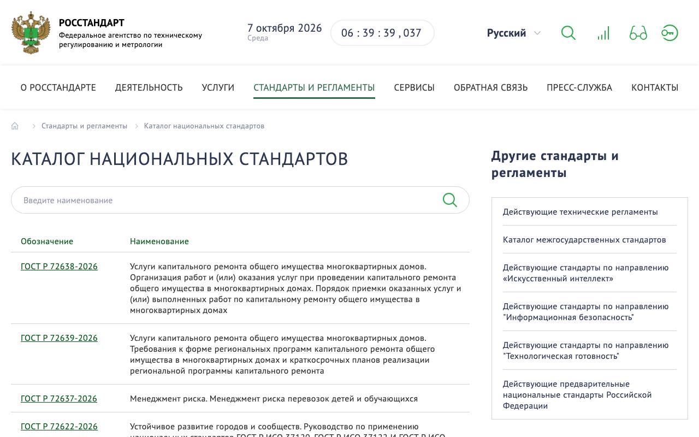
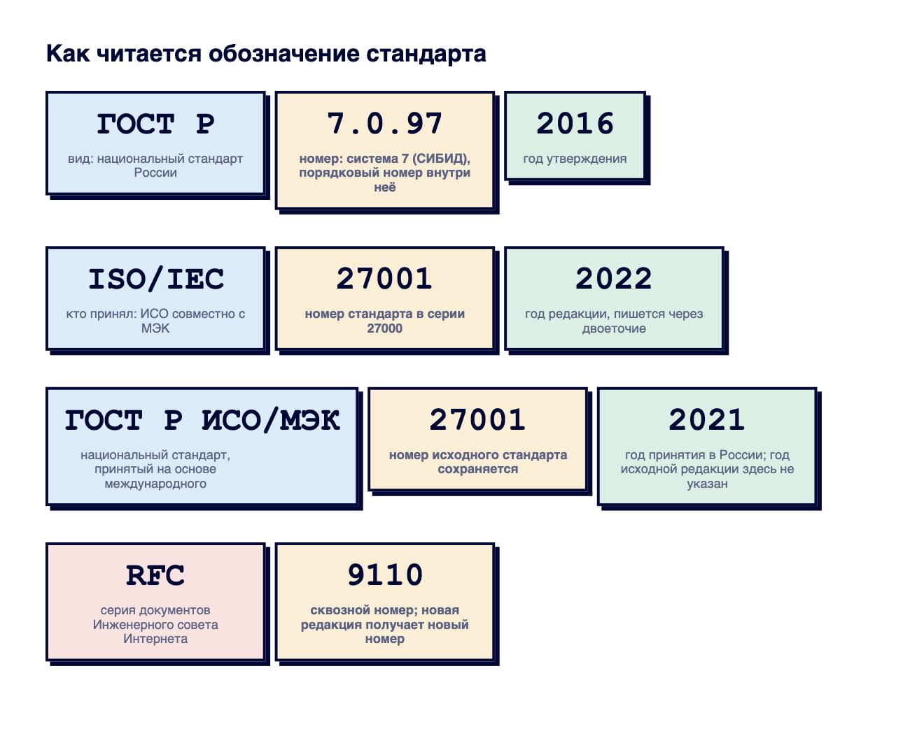

Справочник «Стандарты и сертификаты» · тема 3
Глава 1
Что такое стандарт
и как его читать
Стандарты встречаются разработчику в договоре, в техническом задании, в требованиях заказчика и в документации к библиотекам. В главе разобрано, какие документы называют стандартами, кто их принимает, как читать обозначение и когда стандарт становится обязательным.
- Документы
- 162-ФЗ ст. 26 · ГОСТ, ГОСТ Р, ISO, IEC, RFC, PEP, СТО
- Уровень
- Базовый
- Где встречается
- Договоры, технические задания, требования заказчиков
- Зачем это знать
- Чтобы по обозначению понять, что за документ и обязателен ли он
§1Что называют стандартом
Стандарт — документ, в котором записаны требования, правила или характеристики, чтобы разные люди и организации выполняли одну и ту же работу одинаково. Стандарт задаёт формат даты, смысл кода ответа сервера, состав разделов технического задания, размеры полей приказа.
Стандарт нужен в трёх случаях. Первый — совместимость: браузер и сервер разных производителей понимают друг друга, потому что оба следуют одному документу. Второй — проверка: соответствие стандарту можно установить по пунктам. Третий — договор: вместо десяти страниц требований заказчик пишет одну ссылку на стандарт.
§2Кто принимает стандарты
Стандарты различаются по тому, кто их принял и на какой территории они действуют.
| Вид | Кто принимает | Пример | Где взять текст |
|---|---|---|---|
| Международный стандарт | ISO, IEC, ITU | ISO/IEC 27001:2022 | iso.org, тексты платные |
| Межгосударственный стандарт, ГОСТ | Межгосударственный совет по стандартизации стран СНГ | ГОСТ 34.602-2020 | каталог Росстандарта |
| Национальный стандарт России, ГОСТ Р | Росстандарт | ГОСТ Р 7.0.97-2016 | каталог Росстандарта |
| Стандарт сообщества интернета | IETF, W3C | RFC 9110 | rfc-editor.org, бесплатно |
| Стандарт языка или проекта | разработчики языка, сообщество | PEP 8, Semantic Versioning | сайт проекта, бесплатно |
| Стандарт организации, СТО | сама организация | руководство по оформлению API компании | внутренний портал |

§3Как читать обозначение
Обозначение стандарта состоит из частей, и каждая сообщает отдельный факт: кто принял документ, какой у него номер и какого года редакция.

Обозначение «ГОСТ Р ИСО/МЭК» означает национальный стандарт, принятый на основе международного. Год в нём — год принятия в России. ГОСТ Р ИСО/МЭК 27001-2021 принят в 2021 году на основе более ранней редакции ISO/IEC 27001, поэтому с ISO/IEC 27001:2022 он не совпадает.
У RFC новая редакция получает новый номер. Старый документ остаётся на сайте с пометкой, каким документом он заменён.
§4Когда стандарт обязателен
Национальные стандарты в России применяются добровольно: так записано в статье 26 закона 162-ФЗ «О стандартизации». Обязательным стандарт становится в трёх случаях.
- Фраза «соответствует ГОСТ Р 56939» на сайте
- Номер ГОСТа в руководстве пользователя
- С этого момента стандарт обязателен
- «ТЗ по ГОСТ 34.602-2020»
- Несоответствие считается недостатком работы
- Обычно так пишут государственные заказчики
- Средства защиты информации
- Значимые объекты критической инфраструктуры
- Государственные информационные системы
Подробный разбор с выдержками из закона — в главе 18.1 справочника «Вайбкодинг в России».
§5Как проверить, что стандарт действует
Перед тем как вписать стандарт в договор, проверяют его статус. В каталоге Росстандарта у каждого документа указано, действует он, заменён или отменён. У стандартов ISO статус показан на странице стандарта. У RFC в шапке стоят строки Obsoletes и Updated by.
В ссылке на стандарт указывают год: «ГОСТ 34.602-2020». Без года непонятно, о какой редакции идёт речь, а требования редакций различаются.
§6Частые ошибки
§7Проверьте себя
- Чем национальный стандарт отличается от межгосударственного? Как это видно по обозначению?
- Что означает обозначение ГОСТ Р ИСО/МЭК 27001-2021? К какому году относится число 2021?
- В каких трёх случаях добровольный стандарт становится обязательным?
- Где и как проверить, что стандарт не отменён и не заменён?
- Почему в договоре стандарт указывают вместе с годом?
ГОСТ — межгосударственныйГОСТ Р — национальныйISO/IEC — международныйRFC — интернетСТО — организациявид · номер · годISO: год через двоеточиеГОСТ: год через дефисRFC: новая редакция — новый номер162-ФЗ ст. 26 — добровольнозаявил — обязанв договоре — обязателенпо закону для сферыСправочник «Стандарты и сертификаты» · глава 1Макаров Максим Николаевич